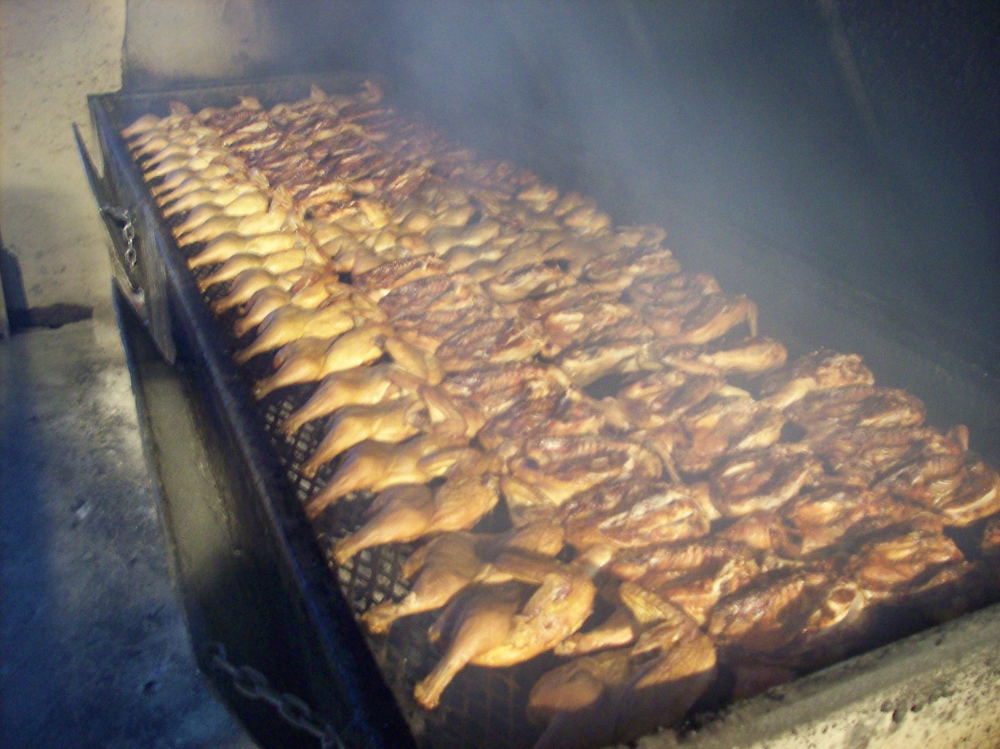

a dishbarbecue chicken
also: half chicken · barbecued chicken · pit chicken · dipped chicken
In the Carolinas it is chicken, not barbecue: 'barbecue' alone means the pork, so the bird keeps its own name.

Half a chicken, cooked on the pit beside the pig or on its own cooker until the skin chars, brushed with the house sauce — vinegar and pepper in the east, a thin tomato-and-vinegar dip in the Piedmont — and sold by the half or the whole bird. At eastern pits it is the one other meat: B's in Greenville sells out of chicken halves by early afternoon, and Skylight Inn lists it beside the whole hog. Keaton's in Cleveland, Rowan County, does it the other way round, frying the chicken and dipping it in a hot vinegar-tomato barbecue sauce. NCpedia notes that North Carolinians seldom use 'barbecue' alone for chicken.
The story Cited · web-ourstate-keatons
Burette Walker Keaton was laid off by the railroad in 1953 and started selling chicken from a cinder-block shack on Cool Springs Road outside Cleveland, in Rowan County. He fried it, then dipped it in a barbecue sauce he said he had worked out 'like a football huddle' with a ninety-two-year-old man, a sauce meant to penetrate the chicken and then the bone; the legend at the counter is that Schlitz offered him $10,000 for the recipe and he said he would think about it at $100,000. He turned down offers to build a proper restaurant in Statesville or Charlotte, and he died in 1989; his niece Kathleen Murray has run Keaton's since 1991, cash only, on hours that change with the season, with the hot vinegar slaw — cabbage in vinegar, tomato, cayenne and celery seed — beside the chicken. In the east the bird is the pit's second meat. Bill and Peggy McLawhorn opened B's in a former convenience store just inside Greenville in 1978; their three daughters run it now with the pitmaster Dexter Sherrod, the hogs cook eight hours on charcoal in metal pit cookers, the chicken halves cook on their own, and the food is gone by early afternoon. Tradition holds — many eastern pits cook chicken only on certain days, and the regulars know which.
How it is done Tradition
The chicken is split into halves and laid bone-side down over the coals or on the cooker, turned once, and cooked until the skin blisters and the joints run clear; at B's it gets a light brushing of the vinegar sauce, and in the Piedmont the dip does the same work. Keaton's fries or bakes it first, then dips the whole piece in the hot sauce so the sauce goes through the crust. A half is the portion; it comes on a tray with slaw and the house bread, or by the whole bird to take away.
Today Cited · web-ourstate-bs-barbecue
B's Barbecue: chicken half $7, whole $11.50 (Our State, January 2016); the food sells out by early afternoon. Keaton's: closed Sunday and Monday, open Tuesday to Saturday on hours that vary between lunch and an evening sitting, no cards (Our State, 2017). Sam Jones BBQ lists a chicken tray and slow-cooked chicken plates (2026).
Facts
| course | main |
|---|---|
| meat | chicken |
| styles | Eastern North Carolina barbecue, Lexington-style barbecue |
| region | The Carolinas, North Carolina, Eastern North Carolina, The North Carolina Piedmont |
| links | Our State — Keaton's Barbecue (2017) · Our State — A Day at B's Barbecue (2016) |
| confidence | high · updated 2026-09-15 |
Recipes you may use
Public-domain cookbooks are printed here in full, spelling and all. Where a recipe is still in copyright, the page gives the ingredients — a list of what goes in is a fact — and links to the rest.
North Carolina Style BBQ Chicken
- 3 each skinless bone-in chicken thighs and drumsticks
- Barbecue rub
- ½ cup apple cider vinegar
- ¼ cup honey
- 2 tbsp Worcestershire sauce
- 1 cup soaked hickory chips
Thighs and drumsticks over charcoal and soaked hickory, mopped with cider vinegar, honey and Worcestershire each time they are turned.
To Barbecue Any Kind of Fresh Meat (receipt 200)
'Any kind of fresh meat' takes in the half chicken; the basting sauce is receipt 335, below. A few characters in this paragraph are damaged in the scan and are read from context; the line 'Gash the meat' runs straight into 'Broil slowly' in the printing.
Sauce for Barbecues (receipt 335)
Butter, mustard, red and black pepper and vinegar — a mop rather than a finishing sauce, brushed on from the first heat.
Barbecue Rub
- 1 cup () brown sugar
- ¼ cup () salt
- ¼ cup () garlic powder
- 1 cup () paprika
- ¼ cup () chipotle powder
- 3 tbsp cayenne pepper
- 3 tbsp dried rosemary
- ¼ cup () chili powder
- ¼ cup () dehydrated lemon peel
A dry rub, the other way a bird is seasoned before it goes on.
Its kin
Who points back
Sources
- Keaton's Barbecue: Where the Chicken is Dipped in a Secret Sauce — and Lore (Joe Posnanski, 2017-04-03) · link
- Keaton's (David Cecelski, 2010-12-08) · link
- A Day at B's Barbecue (Jeremy Markovich, 2016-01-26) · link
- Skylight Inn BBQ — Wikipedia · link
- Barbecue chicken — Wikipedia · link
- NCpedia — Barbecue (Encyclopedia of North Carolina) · link
- Menu · link
- Mrs. Hill's New Cook-Book; or, Housekeeping Made Easy. A Practical System for Private Families, in Town and Country, Especially Adapted to the Southern States — Mrs. A. P. Hill (Annabella P. Hill), of Georgia, 1867 · link
- Cookbook:Barbecue Rub — Wikibooks Cookbook · link
- Cookbook:North Carolina Style BBQ Chicken — Wikibooks Cookbook · link
- Southern Foodways Alliance photographs on Flickr · link
- Flickr — individually licensed photographs · link
Where it came from: Cited a source we name · Harvested pulled from an open dataset · Tradition what the tradition says, hedged · Inference this project's reasoning · Field somebody stood there. This record as JSON.